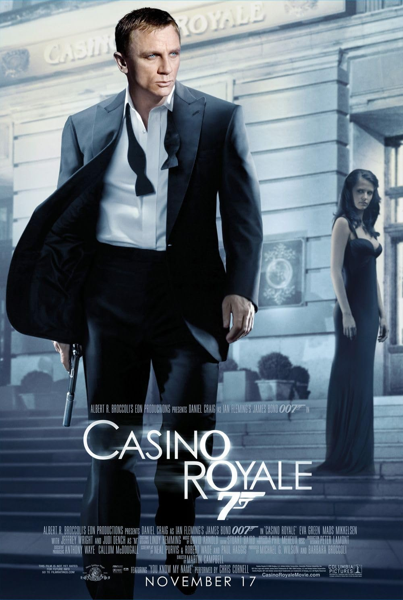

James Bond
Since 2007, James Bond has entered a new era with Daniel Craig’s portrayal, redefining the character with more realism and intensity. This Bond is darker, more human, and struggles with loyalty, love, and trust while still carrying out his duties as a secret agent. The films after 2007 have explored his vulnerabilities and strengths, giving audiences a deeper and fresher perspective on 007.
- Action-packed missions
- Complex emotional depth
- Modernized spy storytelling
Check the rating on Casino Royale (IMDb)